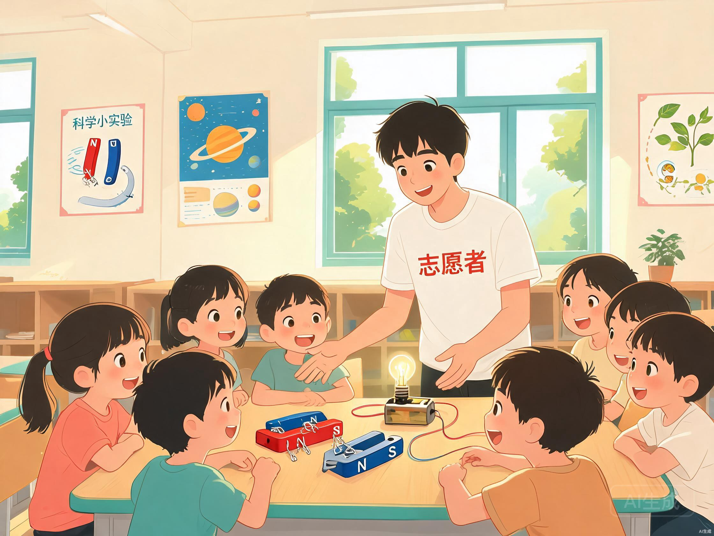
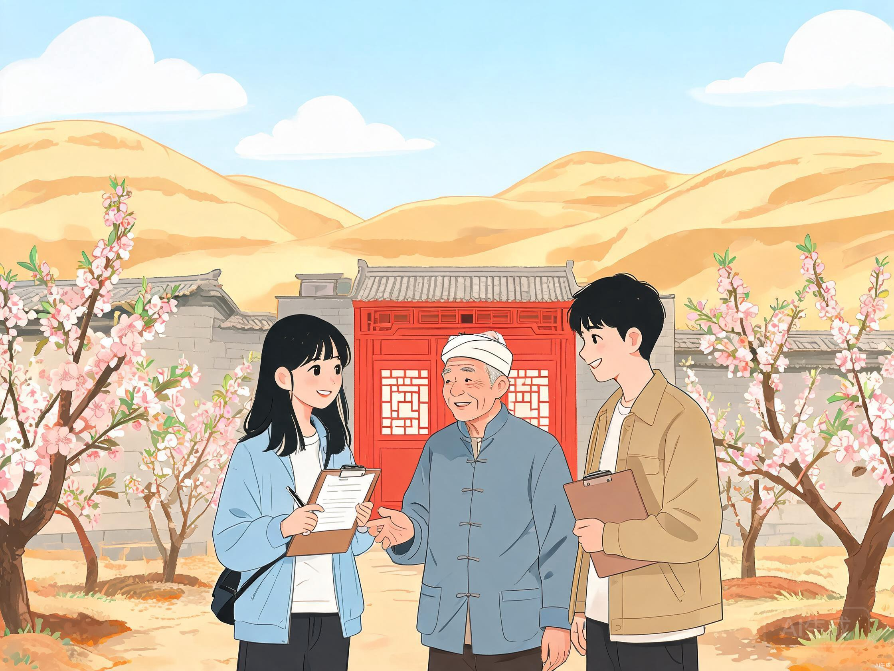
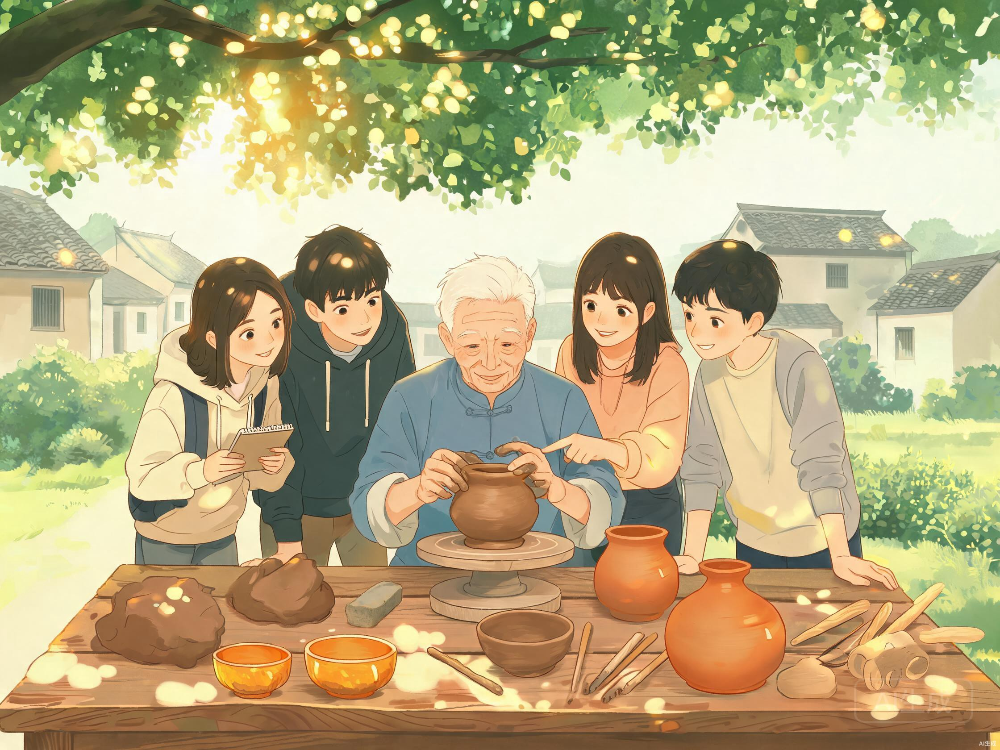
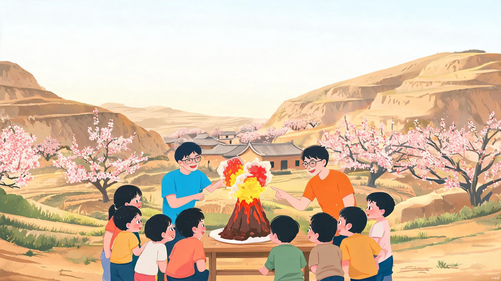

以科普之火，照亮秦安
北京科技大学"科普启航"实践团于2026年暑期奔赴甘肃省天水市秦安县，开展为期17天的科普志愿服务活动。团队深入乡镇、走进校园，通过趣味实验、科技讲座、入户调研等多种形式，将科学的种子播撒在陇原大地上。
使命与初心
响应国家乡村振兴战略号召，发挥高校学科优势，将科学知识带到基层，缩小城乡科普资源差距，激发乡村青少年的科学探索热情。
行动与路径
以"趣味实验课堂＋前沿科技讲座＋入户走访调研＋非遗文化探访"四位一体的科普模式，将科学知识与地方文化深度融合。
愿景与未来
不仅是短期实践，更希望建立长效科普帮扶机制，搭建高校与乡村的科普桥梁，让科学的火种在秦安持续传递。
走进秦安 · 八千年文脉绵长
秦安县位于甘肃省东南部、天水市北部，地处陇山之西、葫芦河下游，古丝绸之路贯穿全境。这里是大地湾文化的发祥地、女娲传说的故里，也是闻名遐迩的"中国桃之乡"[1]。
科普行动 · 将知识带到大山深处
团队深入秦安县8个乡镇，以四大板块为抓手，将科学知识与当地实际紧密结合，打造了一场场生动有趣的科普盛宴。

科学实验课堂
精心设计物理、化学趣味实验，从"火山爆发"到"彩虹密度塔"，用直观震撼的实验现象激发孩子们的科学好奇心与探索欲。

入户走访调研
深入村民家中，了解当地科普教育现状与需求，记录乡村振兴中的科技故事，为后续长效帮扶提供一手数据支撑。

非遗文化探访
寻访秦安陶艺、剪纸等非遗传承人，以科普视角解读传统工艺中的科学原理，推动科技与文化的跨界融合。
实践历程
团队集结，启程赴秦安
北京科技大学"科普启航"实践团整装出发，历经千里奔赴甘肃天水秦安县，与当地政府对接实践计划。
趣味实验课堂开课
先后走进秦安县兴国镇、莲花镇等4个乡镇的中心小学，开展6场科学实验课堂，覆盖学生300余人次。
入户走访与田野调研
深入8个乡镇的村庄农户，发放问卷200余份，访谈村民60余户，全面了解农村科普需求与科技兴农现状。
非遗文化与科技融合
探访秦安陶艺、蜡花舞等非遗项目，以科学视角解读传统工艺，举办"科技＋文化"主题分享会3场。
总结汇报与长效机制搭建
向秦安县有关部门汇报实践成果，签订校地科普帮扶意向协议，搭建长效科普合作机制。
实践成果 · 数据说话
17天的实践，我们用脚步丈量陇原大地，用知识点亮乡村童心。以下是本次社会实践的核心数据成果。
各类型科普活动场次
受众群体构成
科普主题覆盖度
活动满意度反馈
团队风采 · 汇聚北科力量
来自北京科技大学不同学院的8名同学，怀揣共同的科普理想，组成了这支跨学科、充满活力的实践团队。
张明轩
材料科学与工程学院，负责团队整体规划与对外联络，将专业知识融入科普课堂。
李思雨
化学与生物工程学院，设计趣味化学实验课程，让科学的魅力在试管中绽放。
王浩然
计算机与通信工程学院，负责科技讲座与数字科普，用镜头记录每个精彩瞬间。
赵嘉怡
经济管理学院，统筹入户走访调研工作，用数据洞察乡村科普的真实需求。
陈宇豪
机械工程学院，负责实验器材准备与现场安全，确保每场活动顺利开展。
刘梦琪
文法学院，负责团队宣传推广与新媒体运营，让科普故事走出秦安。
孙博远
能源与环境工程学院，负责团队后勤与安全保障，为实践保驾护航。
周雨桐
外国语学院，负责非遗文化探访与科普双语讲解，搭建文化沟通桥梁。
精彩瞬间 · 定格陇原记忆
每一帧画面，都是青春与科学在秦安大地上交汇的见证。
